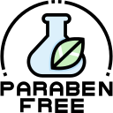
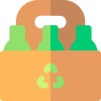

SIRENAS DEL NORTE
QUIÉNES SOMOS
Ocean Skin Cosmética fue fundada por Natalia, inspirada por su amor al mar y a la cosmética, tras 10 años de navegación y estudios de formulación de cosmética natural en EEUU. En tiempos de pandemia, Natalia y Andres unieron sus habilidades creativas y administrativas para crear una marca innovadora, ofreciendo una experiencia fresca y única, con la esperanza de llegar a clientes tanto en Argentina como en todo el mundo.
POR QUÉ ELEGIRNOS

Productos de calidad premium, veganos y libres de crueldad animal.
Más de 6000 testimonios avalan sus resultados.
Primera marca de cosmética batida certificada por ANMAT en Argentina.
Nuestros productos
Somos una empresa comprometida con el bienestar de los animales, por eso nuestros productos son libres de crueldad animal. Es decir, nuestros productos no están testeados en animales.
Todos nuestros productos están certificados por la ANMATpara tu seguridad y nuestra transparencia en cuanto a los ingredientes que utilizamos y han sido testeados clínicamente.
Nuestros productos son libres de derivados de animales. Son productos de orígen 100% vegetal.
Ninguno de nuestros productos contiene parabenos en su formulación lo cual es muy beneficioso, ya que existen estudios que indican que los parabenos están ligados aproblemas cancerígenos.
Nuestros productos están hechos con productos de origen natural y vegetal aprovechando las maravillas que la naturaleza ofrece para el cuidado de nuestra piel.
Tenemos como misión generar un impacto ambiental positivo y es por esto que nuestros envases están confeccionados en plástico PET apto alimenticio, reciclable y reutilizable.